SECCIÓN 9D
SISTEMAS LIMPIA/LAVAPARABRISAS
Precaución: Desconecte el cable negativo de la batería antes de desmontar o instalar cualquier unidad eléctrica o cuando exista la posibilidad de que una herramienta o equipo pueda entrar en contacto con bornes eléctricos expuestos. La desconexión de dicho cable ayudará a evitar lesiones personales y daños al vehículo. La llave de contacto debe estar en posición LOCK a menos que se indique lo contrario.
ESPECIFICACIONES
Especificaciones de apriete de la sujeción
| Aplicación | N•m | Lb-pie | Lb-pulg. |
| Tornillos de la chapa guardabarros del paso de rueda delantera | 1,5 | - | 13 |
| Tuercas y tornillos del depósito de líquido del lavaparabrisas | 9 | - | 80 |
| Tuerca del varillaje del brazo limpiaparabrisas | 8,5 | - | 75 |
| Tuerca del brazo limpiaparabrisas | 11 | 8 | - |
| Tornillos del motor del limpiaparabrisas | 9 | - | 80 |
| Tornillos de la unidad del limpiaparabrisas | 9 | - | 80 |
ESQUEMAS Y DIAGRAMAS DE CABLEADO
Sistema de limpiaparabrisas y lavaparabrisas del parabrisas/luneta trasera (con intermitente)
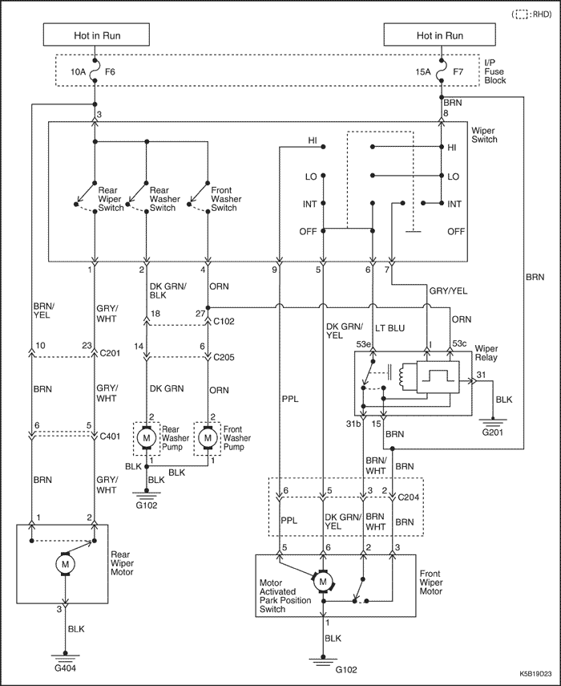


DIAGNÓSTICO
Limpiaparabrisas intermitente
Los limpiaparabrisas no funcionan a ninguna velocidad
| Paso | Medida | Valor(es) | Sí | No |
| 1 | Compruebe el fusible F7. ¿Está fundido el fusible F7? | - | Vaya al Paso 2 | Vaya al Paso 3 |
| 2 | - Compruebe si hay algún cortocircuito y repárelo, si fuera necesario.
- Sustituya el fusible.
¿Se ha realizado la reparación? | - | Sistema OK | - |
| 3 | Compruebe la tensión de la batería en el fusible F7. ¿Dispone el fusible F7 de tensión de batería? | 11-14 V | Vaya al Paso 5 | Vaya al Paso 4 |
| 4 | Repare el circuito abierto de alimentación de corriente al fusible F7. ¿Se ha realizado la reparación? | - | Sistema OK | - |
| 5 | - Gire la llave de contacto a la posición ON.
- Gire el interruptor del limpiaparabrisas a la posición HI (alta).
¿Dispone el terminal 5 del conector del motor del limpiaparabrisas de tensión de batería? | 11-14 V | Vaya al Paso 6 | Vaya al Paso 7 |
| 6 | Sustituya el motor del limpiaparabrisas defectuoso. ¿Se ha realizado la reparación? | - | Sistema OK | - |
| 7 | - Desenchufe el conector del interruptor del limpiaparabrisas.
- Gire la llave de contacto a la posición ON.
- Utilice un voltímetro para comprobar la tensión de la batería en el terminal 8 del conector.
¿Dispone el terminal 8 del conector del interruptor del limpiaparabrisas de tensión de batería? | 11-14 V | Vaya al Paso 9 | Vaya al Paso 8 |
| 8 | Repare el circuito abierto entre el terminal 8 del conector del interruptor del limpiaparabrisas y el fusible F7. ¿Se ha realizado la reparación? | - | Sistema OK | - |
| 9 | - Utilice un ohmímetro para comprobar la continuidad del interruptor del limpiaparabrisas.
- Gire el interruptor del limpiaparabrisas a la posición HI (alta). Compruebe la continuidad entre los terminales 8 y 9 del interruptor del limpiaparabrisas.
¿Hay continuidad entre los terminales 8 y 9? | ≈ 0 Ω | Vaya al Paso 11 | Vaya al Paso 10 |
| 10 | Sustituya el interruptor del limpiaparabrisas defectuoso. ¿Se ha realizado la reparación? | - | Sistema OK | - |
| 11 | Repare el circuito abierto entre el interruptor del limpiaparabrisas y el motor del limpiaparabrisas. ¿Se ha realizado la reparación? | - | Sistema OK | - |
Los limpiaparabrisas no funcionan a velocidad rápida, a velocidad lenta funcionan correctamente
| Paso | Medida | Valor(es) | Sí | No |
| 1 | - Gire la llave de contacto a la posición ON.
- Gire el interruptor del limpiaparabrisas a la posición HI (alta).
¿Dispone el terminal 5 del conector del motor del limpiaparabrisas de tensión de batería? | 11-14 V | Vaya al Paso 2 | Vaya al Paso 3 |
| 2 | Sustituya el motor del limpiaparabrisas defectuoso. ¿Se ha realizado la reparación? | - | Sistema OK | - |
| 3 | - Utilice un ohmímetro para comprobar la continuidad del interruptor del limpiaparabrisas.
- Gire el interruptor del limpiaparabrisas a la posición HI (alta). Compruebe la continuidad entre los terminales 8 y 9 del interruptor del limpiaparabrisas.
¿Hay continuidad entre los terminales 8 y 9? | ≈ 0 Ω | Vaya al Paso 5 | Vaya al Paso 4 |
| 4 | Sustituya el interruptor del limpiaparabrisas defectuoso. ¿Se ha realizado la reparación? | - | Sistema OK | - |
| 5 | Repare el circuito abierto entre el terminal 9 del conector del interruptor del limpiaparabrisas y el terminal 5 del conector del motor del limpiaparabrisas. ¿Se ha realizado la reparación? | - | Sistema OK | - |
Los limpiaparabrisas no funcionan a velocidad lenta, a velocidad rápida funcionan correctamente
| Paso | Medida | Valor(es) | Sí | No |
| 1 | - Gire la llave de contacto a la posición ON.
- Gire el interruptor del limpiaparabrisas a la posición LO.
¿Dispone el terminal 5 del conector del motor del limpiaparabrisas de tensión de batería? | 11-14 V | Vaya al Paso 2 | Vaya al Paso 3 |
| 2 | Sustituya el motor del limpiaparabrisas defectuoso. ¿Se ha realizado la reparación? | - | Sistema OK | - |
| 3 | - Utilice un ohmímetro para comprobar la continuidad del interruptor del limpiaparabrisas.
- Gire el interruptor del limpiaparabrisas a la posición LO (baja). Compruebe la continuidad entre los terminales 8 y 5 del interruptor del limpiaparabrisas.
¿Hay continuidad entre los terminales 8 y 5? | ≈ 0 Ω | Vaya al Paso 5 | Vaya al Paso 4 |
| 4 | Sustituya el interruptor del limpiaparabrisas defectuoso. ¿Se ha realizado la reparación? | - | Sistema OK | - |
| 5 | Repare el circuito abierto entre el terminal 5 del conector del interruptor del limpiaparabrisas y el terminal 6 del conector del motor del limpiaparabrisas. ¿Se ha realizado la reparación? | - | Sistema OK | - |
Los limpiaparabrisas no funcionan intermitentemente; a otras velocidades funcionan correctamente
Ayudas para el diagnóstico
El relé del limpiaparabrisas está situado detrás del panel de instrumentos, debajo del potenciómetro de intensidad de luz del cuadro de instrumentos. Desmonte el potenciómetro de intensidad de luz y la tapa lateral del panel de instrumentos para tener acceso al relé del limpiaparabrisas.
| Paso | Medida | Valor(es) | Sí | No |
| 1 | - Gire la llave de contacto a la posición ON.
- Utilice un voltímetro para comprobar la tensión de la batería en el terminal 15 del conector del relé del limpiaparabrisas.
¿Dispone el terminal 15 del conector de tensión de batería? | 11-14 V | Vaya al Paso 3 | Vaya al Paso 2 |
| 2 | Repare el circuito abierto entre el terminal 15 del conector del relé del limpiaparabrisas y el fusible F7. ¿Se ha realizado la reparación? | - | Sistema OK | - |
| 3 | - Gire la llave de contacto a la posición ON.
- Gire el interruptor del limpiaparabrisas a la posición INT.
Utilice un voltímetro para saber si el terminal I del conector del relé del limpiaparabrisas dispone de tensión de batería. | 11-14 V | Vaya al Paso 7 | Vaya al Paso 4 |
| 4 | - Gire la llave de contacto a la posición ON.
- Gire el interruptor del limpiaparabrisas a la posición INT.
Utilice un voltímetro para saber si el terminal 7 del conector del interruptor del limpiaparabrisas dispone de tensión de batería. | 11-14 V | Vaya al Paso 6 | Vaya al Paso 5 |
| 5 | Sustituya el interruptor del limpiaparabrisas. ¿Se ha realizado la reparación? | - | Sistema OK | - |
| 6 | Repare el circuito abierto entre el terminal 7 del conector del interruptor del limpiaparabrisas y el terminal 1 del conector del relé del limpiaparabrisas. ¿Se ha realizado la reparación? | - | Sistema OK | - |
| 7 | - Gire la llave de contacto a la posición ON.
- Gire el interruptor del limpiaparabrisas a la posición INT.
Utilice un voltímetro para saber si el terminal 53e del conector del relé del limpiaparabrisas dispone de tensión de batería. | 11-14 V | Vaya al Paso 11 | Vaya al Paso 8 |
| 8 | Utilice un ohmímetro para comprobar el circuito de conexión a masa del relé del limpiaparabrisas (terminal 31 del conector). ¿Está bien el circuito de conexión a masa? | ≈ 0 Ω | Vaya al Paso 10 | Vaya al Paso 9 |
| 9 | Repare el circuito de conexión a masa abierto. ¿Se ha realizado la reparación? | - | Sistema OK | - |
| 10 | Sustituya el relé del limpiaparabrisas. ¿Se ha realizado la reparación? | - | Sistema OK | - |
| 11 | - Desenchufe el conector del interruptor del limpiaparabrisas.
- Gire el interruptor del limpiaparabrisas a la posición INT.
- Utilice un ohmímetro para comprobar el interruptor del limpiaparabrisas.
¿Hay continuidad entre los terminales 5 y 6? | ≈ 0 Ω | Vaya al Paso 13 | Vaya al Paso 12 |
| 12 | Sustituya el interruptor del limpiaparabrisas defectuoso. ¿Se ha realizado la reparación? | - | Sistema OK | - |
| 13 | Repare el circuito abierto entre el interruptor y el relé del limpiaparabrisas. ¿Se ha realizado la reparación? | - | Sistema OK | - |
Los limpiaparabrisas no vuelven a la posición de inmovilización
| Paso | Medida | Valor(es) | Sí | No |
| 1 | - Gire la llave de contacto a la posición ON.
- Utilice un voltímetro para comprobar la tensión de la batería en el motor del limpiaparabrisas.
¿Dispone el terminal 3 del conector del motor del limpiaparabrisas de tensión de batería? | 11-14 V | Vaya al Paso 3 | Vaya al Paso 2 |
| 2 | Repare el circuito abierto entre el motor del limpiaparabrisas y el fusible F7. | - | Sistema OK | - |
| 3 | - Gire la llave de contacto a la posición ON.
- Gire el interruptor del limpiaparabrisas a la posición HI (alta).
- Utilice un voltímetro para comprobar si hay impulsos de alimentación de la batería en el motor del limpiaparabrisas cuando el interruptor del limpiaparabrisas está apagado.
¿Dispone el terminal 2 del conector del motor del limpiaparabrisas de impulsos de tensión de batería con el interruptor apagado? | 11-14 V | Vaya al Paso 5 | Vaya al Paso 4 |
| 4 | Sustituya el motor del limpiaparabrisas defectuoso. ¿Se ha realizado la reparación? | - | Sistema OK | - |
| 5 | - Gire la llave de contacto a la posición ON.
- Gire el interruptor del limpiaparabrisas a la posición HI (alta).
- Utilice un voltímetro para comprobar si hay impulsos de alimentación de la batería en el relé del limpiaparabrisas cuando el interruptor del limpiaparabrisas está apagado.
¿Dispone el terminal 31b del conector del relé del limpiaparabrisas de impulsos de tensión de batería con el interruptor apagado? | 11-14 V | Vaya al Paso 7 | Vaya al Paso 6 |
| 6 | Repare el circuito abierto entre el motor y el relé del limpiaparabrisas. ¿Se ha realizado la reparación? | - | Sistema OK | - |
| 7 | - Desconecte el relé del limpiaparabrisas del conector.
- Utilice un ohmímetro para comprobar la continuidad del relé.
¿Hay continuidad entre los terminales 31b y 53e del conector del relé del limpiaparabrisas? | ≈ 0 Ω | Vaya al Paso 9 | Vaya al Paso 8 |
| 8 | Sustituya el relé del limpiaparabrisas defectuoso. ¿Se ha realizado la reparación? | - | Sistema OK | - |
| 9 | Sustituya el interruptor del limpiaparabrisas defectuoso. ¿Se ha realizado la reparación? | - | Sistema OK | - |
Sistema lavaparabrisas
El lavaparabrisas no funciona, los limpiaparabrisas funcionan correctamente
| Paso | Medida | Valor(es) | Sí | No |
| 1 | Compruebe el fusible F6. ¿Está fundido el fusible F6? | - | Vaya al Paso 2 | Vaya al Paso 3 |
| 2 | - Compruebe si hay algún cortocircuito y repárelo si fuera necesario.
- Sustituya el fusible F6.
¿Se ha realizado la reparación? | - | Sistema OK | - |
| 3 | ¿Funcionan los limpiaparabrisas cuando se activa el interruptor del lavaparabrisas? | - | Vaya al Paso 6 | Vaya al Paso 4 |
| 4 | - Gire la llave de contacto a la posición ON.
- Al tiempo que activa el interruptor del lavaparabrisas, compruebe con un voltímetro la tensión de la batería en el interruptor del limpiaparabrisas.
¿Dispone el terminal 4 del conector del interruptor del limpiaparabrisas de tensión de batería? | 11-14 V | Vaya al Paso 10 | Vaya al Paso 5 |
| 5 | Sustituya el interruptor del limpiaparabrisas. ¿Se ha realizado la reparación? | - | Sistema OK | - |
| 6 | ¿Hay líquido de lavado en el depósito del lavaparabrisas? | - | Vaya al Paso 8 | Vaya al Paso 7 |
| 7 | Llene el depósito de líquido del lavaparabrisas. ¿Se ha realizado la reparación? | - | Sistema OK | - |
| 8 | ¿Están los manguitos y las toberas obstruidos o dañados? | - | Vaya al Paso 9 | Vaya al Paso 10 |
| 9 | Repare los manguitos y las toberas del lavaparabrisas. ¿Se ha realizado la reparación? | - | Sistema OK | - |
| 10 | - Gire la llave de contacto a la posición ON.
- Con el lavaparabrisas activado, compruebe con un voltímetro la tensión de la batería en la bomba del lavaparabrisas.
¿Dispone la bomba del lavaparabrisas de tensión de batería? | 11-14 V | Vaya al Paso 12 | Vaya al Paso 11 |
| 11 | Repare el circuito abierto entre la bomba del lavaparabrisas y el interruptor del limpiaparabrisas. ¿Se ha realizado la reparación? | - | Sistema OK | - |
| 12 | Compruebe con un ohmímetro el circuito de conexión a masa en la bomba del lavaparabrisas. ¿Está bien el circuito de conexión a masa? | ≈ 0 Ω | Vaya al Paso 14 | Vaya al Paso 13 |
| 13 | Repare el circuito de conexión a masa de la bomba del lavaparabrisas. ¿Se ha realizado la reparación? | - | Sistema OK | - |
| 14 | Sustituya la bomba del lavaparabrisas. ¿Se ha realizado la reparación? | - | Sistema OK | - |
Brazo del limpiaparabrisas de la luneta trasera
Brazo del limpiaparabrisas de la luneta trasera
| Paso | Medida | Valor(es) | Sí | No |
| 1 | Compruebe el fusible F6. ¿Está fundido el fusible F6? | - | Vaya al Paso 2 | Vaya al Paso 3 |
| 2 | - Compruebe si hay algún cortocircuito y repárelo si fuera necesario.
- Sustituya el fusible F6.
¿Se ha realizado la reparación? | - | Sistema OK | - |
| 3 | - Gire la llave de contacto a la posición ON.
- Compruebe la tensión en el fusible F6.
¿Es la tensión igual al valor especificado? | 11-14 V | Vaya al Paso 5 | Vaya al Paso 4 |
| 4 | Repare el circuito de alimentación de corriente abierto del fusible F6. ¿Se ha realizado la reparación? | - | Sistema OK | - |
| 5 | - Desenchufe el conector eléctrico del motor del limpiaparabrisas trasero.
- Gire la llave de contacto a la posición ON.
- Compruebe la tensión en el cable MRN del conector eléctrico del motor del limpiaparabrisas trasero.
¿Es la tensión igual al valor especificado? | 11-14 V | Vaya al Paso 7 | Vaya al Paso 6 |
| 6 | Repare el circuito abierto en el cable MRN/AMA entre el fusible F6 y el conector del motor del limpiaparabrisas trasero. ¿Se ha realizado la reparación? | - | Sistema OK | - |
| 7 | Con el motor del limpiaparabrisas todavía desconectado, use un ohmímetro para comprobar la continuidad entre masa y el cable NGR del conector del motor del limpiaparabrisas trasero. ¿Indica el ohmímetro el valor especificado? | ≈ 0 Ω | Vaya al Paso 9 | Vaya al Paso 8 |
| 8 | Repare el circuito de conexión a masa abierto del motor del limpiaparabrisas trasero. ¿Se ha realizado la reparación? | - | Sistema OK | - |
| 9 | - Gire la llave de contacto a la posición ON.
- Encienda el limpiaparabrisas trasero.
- Compruebe la tensión en el cable GRS/BCO del conector del motor del limpiaparabrisas trasero.
¿Indica el voltímetro el valor especificado? | 11-14 V | Vaya al Paso 10 | Vaya al Paso 11 |
| 10 | Sustituya el motor del limpiaparabrisas trasero. ¿Se ha realizado la reparación? | - | Sistema OK | - |
| 11 | - Desenchufe el conector eléctrico del interruptor del limpiaparabrisas.
- Gire la llave de contacto a la posición ON.
- Compruebe la tensión en el terminal 3.
¿El valor de la tensión es el mismo que el especificado? | 11-14 V | Vaya al Paso 13 | Vaya al Paso 12 |
| 12 | Repare el circuito abierto entre el terminal 3 del conector del interruptor del limpiaparabrisas y el fusible F6. ¿Se ha realizado la reparación? | - | Sistema OK | - |
| 13 | - Conecte un ohmímetro entre los terminales 1 y 3 del interruptor del limpiaparabrisas.
- Observe el ohmímetro al poner el interruptor del limpiaparabrisas trasero en la posición WIPE (limpieza).
¿Indica el ohmímetro el valor especificado? | ≈ 0 Ω | Vaya al Paso 14 | Vaya al Paso 15 |
| 14 | Repare el circuito abierto entre el terminal 1 del conector del limpiaparabrisas (cable GRS/BCO) y el motor del limpiaparabrisas trasero. ¿Se ha realizado la reparación? | - | Sistema OK | - |
| 15 | Sustituya el interruptor del limpiaparabrisas. ¿Se ha realizado la reparación? | - | Sistema OK | - |
Sistema de lavado de la luna trasera
| Paso | Medida | Valor(es) | Sí | No |
| 1 | Compruebe el fusible F6. ¿Está fundido el fusible F6? | - | Vaya al Paso 2 | Vaya al Paso 3 |
| 2 | - Compruebe si hay algún cortocircuito y repárelo si fuera necesario.
- Sustituya el fusible F6.
¿Se ha realizado la reparación? | - | Sistema OK | - |
| 3 | Compruebe el nivel de líquido de lavado. ¿Hay suficiente líquido en el depósito? | - | Vaya al Paso 5 | Vaya al Paso 4 |
| 4 | Llene el depósito. ¿Se ha realizado la reparación? | - | Sistema OK | - |
| 5 | Verifique que los manguitos no estén obstruidos ni tengan fugas, para ello desconecte el manguito del lavaparabrisas y sople por él hacia el depósito y la tobera. ¿Están los manguitos obstruidos o tienen fugas? | - | Vaya al Paso 6 | Vaya al Paso 7 |
| 6 | Repare o sustituya los manguitos. ¿Se ha realizado la reparación? | - | Sistema OK | - |
| 7 | Compruebe el funcionamiento limpiaparabrisas de la luneta trasera. ¿Funciona correctamente el limpiaparabrisas trasero? | - | Vaya al Paso 9 | Vaya al Paso 8 |
| 8 | Repare el limpiaparabrisas trasero. ¿Se ha realizado la reparación del limpiaparabrisas trasero? | - | Vaya al Paso 9 | - |
| 9 | - Desenchufe el conector eléctrico de la bomba del lavaparabrisas de la luneta trasera.
- Compruebe con un ohmímetro la continuidad entre el cable NGR del conector de la bomba del lavaparabrisas trasero y masa.
¿Indica el ohmímetro el valor especificado? | ≈ 0 Ω | Vaya al Paso 11 | Vaya al Paso 10 |
| 10 | Repare la interrupción o la alta resistencia en la conexión a masa. ¿Se ha realizado la reparación? | - | Sistema OK | - |
| 11 | Compruebe la tensión en el conector de la bomba del lavaprabrisas trasero (cable DK VER) al accionar el lavaparabrisas trasero. ¿El valor de la tensión es el mismo que el especificado? | 11-14 V | Vaya al Paso 12 | Vaya al Paso 13 |
| 12 | Sustituya la bomba del lavaparabrisas trasero. ¿Se ha realizado la reparación? | - | Sistema OK | - |
| 13 | - Desconecte el interruptor del limpiaparabrisas.
- Conecte un ohmímetro entre los terminales 2 y 3 del interruptor del limpiaparabrisas.
- Observe el ohmímetro al poner el interruptor en la posición WASH (lavado luneta trasera).
¿Indica el ohmímetro el valor especificado? | ≈ 0 Ω | Vaya al Paso 14 | Vaya al Paso 15 |
| 14 | Repare el circuito abierto entre el terminal 2 del conector del interruptor del limpiaparabrisas y la bomba del lavaparabrisas trasero. ¿Se ha realizado la reparación? | - | Sistema OK | - |
| 15 | Sustituya el interruptor del limpiaparabrisas. ¿Se ha realizado la reparación? | - | Sistema OK | - |
MANTENIMIENTO Y REPARACIÓN
SERVICIO EN EL VEHÍCULO
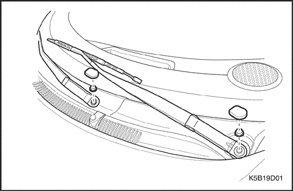
Brazo limpiaparabrisas
(Indicado para conducción a izquierdas, conducción a derechas similar)
Procedimiento de desmontaje
- Quite las tuercas del brazo limpiaparabrisas.
- Tire del brazo para retirarlo.
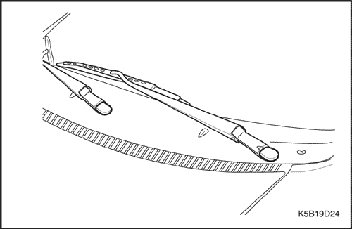
Procedimiento de montaje
- Monte el brazo limpiaparabrisas con sus tuercas.
Aviso: Metales distintos en contacto directo pueden corroerse rápidamente. Asegúrese de utilizar los elementos de sujeción correctos para evitar una corrosión prematura.
Apretar
Apriete las tuercas del brazo limpiaparabrisas hasta 11 N•m (8 lbs-pie).
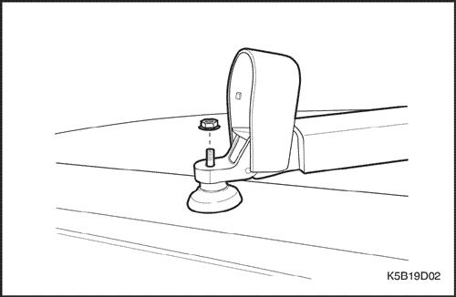
Brazo del limpiaparabrisas de la luneta trasera
Procedimiento de desmontaje
- Abra el tapón de acceso del brazo limpiaparabrisas.
- Quite la tuerca y desmonte el brazo limpiaparabrisas trasero.
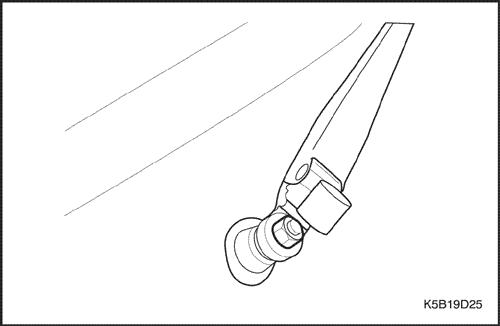
Procedimiento de montaje
Aviso: Metales distintos en contacto directo pueden corroerse rápidamente. Asegúrese de utilizar los elementos de sujeción correctos para evitar una corrosión prematura.
- Monte el brazo limpiaparabrisas de la luneta trasera con su tuerca.
Apretar
Apriete la tuerca del brazo limpiaparabrisas hasta 9 N•m (80 lb-pie).
- Cierre el tapón de acceso del brazo limpiaparabrisas.
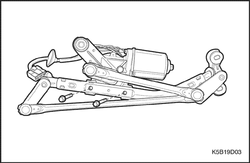
Motor del limpiaparabrisas
(Indicado para conducción a izquierdas, conducción a derechas similar)
Procedimiento de desmontaje
- Desconecte el cable negativo de la batería.
- Retire los brazos limpiaparabrisas. Consulte el apartado "Brazo limpiaparabrisas" de esta sección.
- Desmonte la rejilla de ventilación del capó. Consulte la Sección 9R, Parte delantera de la carrocería.
- Desmonte la unidad del limpiaparabrisas. Consulte el apartado "Unidad del limpiaparabrisas" de esta sección.
- Quite los tornillos y desmonte el motor del limpiaparabrisas.
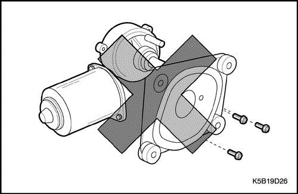
Precaución: Dado que el plato de la articulación del motor del limpiaparabrisas es fijo, no separe el motor de su soporte.
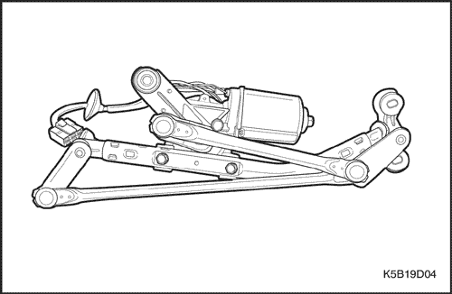
Procedimiento de montaje
Aviso: Metales distintos en contacto directo pueden corroerse rápidamente. Asegúrese de utilizar los elementos de sujeción correctos para evitar una corrosión prematura.
- Monte el motor del limpiaparabrisas con sus tornillos.
Apretar
Apriete los tornillos del motor del limpiaparabrisas hasta 9 N•m (80 lb-pulg.).
- Enchufe el conector eléctrico.
- Monte la unidad del limpiaparabrisas. Consulte el apartado "Motor del limpiaparabrisas" de esta sección.
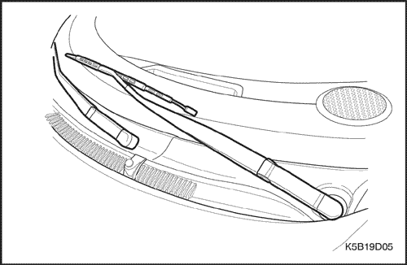
- Monte la rejilla de ventilación del capó. Consulte la Sección 9R, Parte delantera de la carrocería.
- Monte el brazo limpiaparabrisas. Consulte el apartado "Brazo limpiaparabrisas" de esta sección.
- Conecte el cable negativo de la batería.
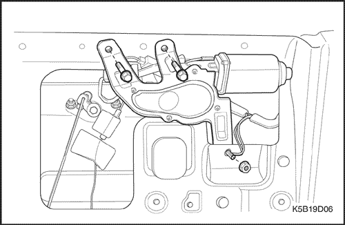
Motor del limpiaparabrisas de la luneta trasera
Procedimiento de desmontaje
- Desconecte el cable negativo de la batería.
- Desmonte el brazo limpiaparabrisas del portón trasero. Consulte el apartado "Brazo limpiaparabrisas de la luneta trasera" de esta sección.
- Desmonte el guarnecido interior del portón trasero. Consulte la Sección 9G, Guarnecido interior.
- Quite los tornillos y desmonte el motor del limpiaparabrisas trasero.
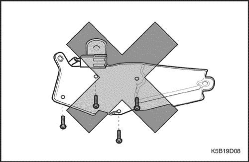
Precaución: Dado que el plato de la articulación del motor del limpiaparabrisas es fijo, no separe el motor de su soporte.
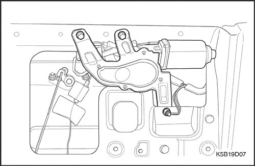
Procedimiento de montaje
Aviso: Metales distintos en contacto directo pueden corroerse rápidamente. Asegúrese de utilizar los elementos de sujeción correctos para evitar una corrosión prematura.
- Monte el conjunto del motor del limpiaparabrisas con sus tornillos en el portón trasero.
Apretar
Apriete los tornillos del motor del limpiaparabrisas trasero hasta 8 N•m (70 lb-pulg.).
- Enchufe el conector eléctrico.
- Monte el guarnecido interior del portón trasero. Consulte la Sección 9G, Guarnecido interior.
- Monte el brazo limpiaparabrisas. Consulte el apartado "Brazo limpiaparabrisas de la luneta trasera" de esta sección.
- Conecte el cable negativo de la batería.
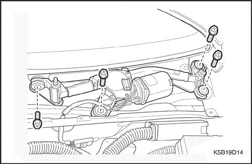
Unidad del limpiaparabrisas
(Indicado para conducción a izquierdas, conducción a derechas similar)
Procedimiento de desmontaje
- Retire los brazos limpiaparabrisas. Consulte el apartado "Brazo limpiaparabrisas" de esta sección.
- Desmonte la rejilla de ventilación del capó. Consulte la Sección 9R, Parte delantera de la carrocería.
- Quite los tornillos y la unidad del limpiaparabrisas.
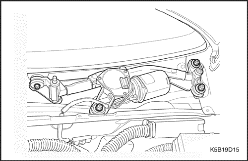
Procedimiento de montaje
- Monte la unidad del limpiaparabrisas con sus tornillos.
Apretar
Apriete los tornillos de la unidad del limpiaparabrisas hasta 9 N•m (80 lb-pulg.).
- Monte la rejilla de ventilación del capó. Consulte la Sección 9R, Parte delantera de la carrocería.
- Monte el brazo limpiaparabrisas. Consulte el apartado "Brazo limpiaparabrisas" de esta sección.
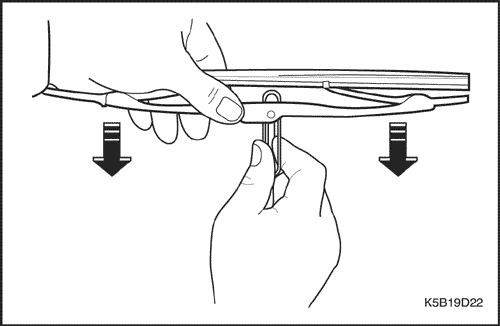
Escobilla del limpiaparabrisas
Procedimiento de desmontaje
- Separe la escobilla del brazo empujando el clip de fijación de ésta.
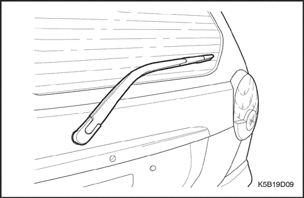
Procedimiento de montaje
- Monte la escobilla del limpiaparabrisas en el brazo.
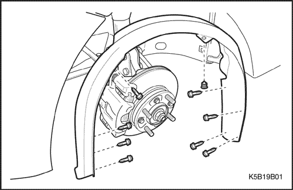
Depósito del lavaparabrisas
Procedimiento de desmontaje
- Desconecte el cable negativo de la batería.
- Levante y apoye el vehículo adecuadamente.
- Desmonte la rueda delantera. Consulte la sección 2E, Neumáticos y ruedas.
- Quite los tornillos y desmonte la chapa guardabarros del paso de rueda delantera.
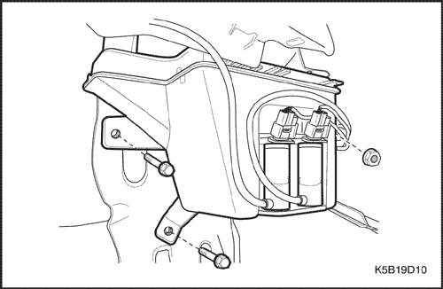
- Desconecte el (los) manguito(s) del lavaparabrisas del depósito.
- Desenchufe los conectores eléctricos de la bomba del depósito.
- Quite los tornillos y la tuerca, y desmonte el depósito.
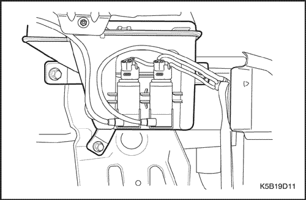
Procedimiento de montaje
Aviso: Metales distintos en contacto directo pueden corroerse rápidamente. Asegúrese de utilizar los elementos de sujeción correctos para evitar una corrosión prematura.
- Monte el depósito con sus tuercas y tornillos.
Apretar
Apriete las tuercas del depósito de líquido del lavaparabrisas hasta 4 N•m (35 lb-pulg.).
Apriete los tornillos del depósito de líquido del lavaparabrisas hasta 4 N•m (35 lb-pulg.).
- Enchufe el (los) conector(es) eléctrico(s) de la bomba del depósito.
- Conecte el (los) manguito(s) del lavaparabrisas al depósito.
- Monte la chapa guardabarros del paso de rueda delantera con sus tornillos.
Apretar
Apriete los tornillos de la chapa guardabarros del paso de rueda delantera hasta 1,5 N•m (13 lb-pulg.).
- Monte la rueda delantera izquierda. Consulte la Sección 2E, Neumáticos y ruedas.
- Conecte el cable negativo de la batería.
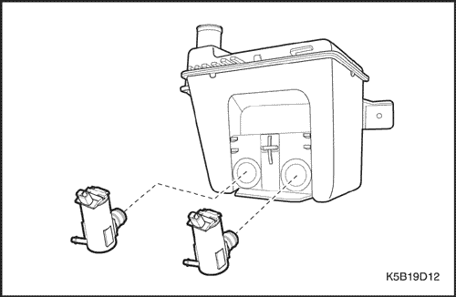
Bomba del lavaparabrisas
Procedimiento de desmontaje
- Desconecte el cable negativo de la batería.
- Desmonte la rueda delantera izquierda. Consulte la Sección 2E, Neumáticos y ruedas.
- Quite los tornillos y desmonte la chapa guardabarros del paso de rueda delantera.
- Desenchufe el conector eléctrico.
- Desconecte el manguito de lavado.
- Desmonte la bomba del lavaparabrisas.
Procedimiento de montaje
- Monte la bomba del lavaparabrisas.
- Conecte el manguito del lavaparabrisas.
- Enchufe el conector eléctrico.
Aviso: Metales distintos en contacto directo pueden corroerse rápidamente. Asegúrese de utilizar los elementos de sujeción correctos para evitar una corrosión prematura.
- Monte la chapa guardabarros del paso de rueda delantera con sus tornillos.
Apretar
Apriete los tornillos de la chapa guardabarros del paso de rueda delantera hasta 1,5 N•m (13 lb-pulg.).
- Monte la rueda delantera izquierda. Consulte la Sección 2E, Neumáticos y ruedas.
- Conecte el cable negativo de la batería.
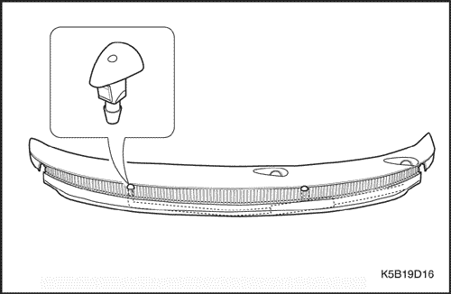
Tobera del lavaparabrisas
Procedimiento de desmontaje
- Abra el capó.
- Desmonte la rejilla de ventilación del capó. Consulte la Sección 9R, Parte delantera de la carrocería.
- Desmonte el manguito de la tobera del lavaparabrisas de la rejilla de ventilación del capó.
- Desmonte de la rejilla de ventilación del capó la tobera del lavaparabrisas.
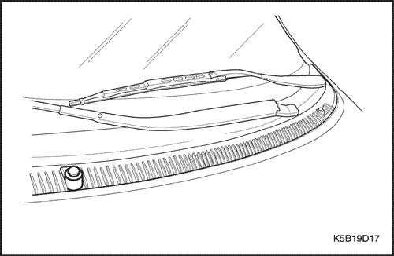
Procedimiento de montaje
- Monte la tobera del lavaparabrisas en la rejilla de ventilación del capó.
- Conecte el manguito a la tobera del lavaparabrisas.
- Monte la rejilla de ventilación del capó. Consulte la Sección 9R, Parte delantera de la carrocería.
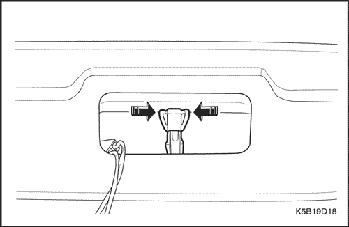
Tobera del lavaparabrisas de la luneta trasera
Procedimiento de desmontaje
- Desmonte el deflector aerodinámico del portón trasero. Consulte la sección 9M, Guarnecido exterior.
- Desmonte la luz de freno de fijación central superior del portón trasero. Consulte la Sección 9B, Sistemas de alumbrado.
- Retire el manguito del lavaparabrisas de la tobera.
- Desmonte la tobera del lavaparabrisas.
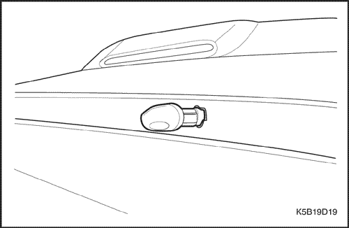
Procedimiento de montaje
- Monte la tobera del portón trasero.
- Conecte el manguito del lavaparabrisas en la tobera.
- Monte la luz CHMSL en el portón trasero. Consulte la Sección 9B, Sistemas de alumbrado.
- Monte el deflector aerodinámico trasero. Consulte la sección 9M, Guarnecido exterior.
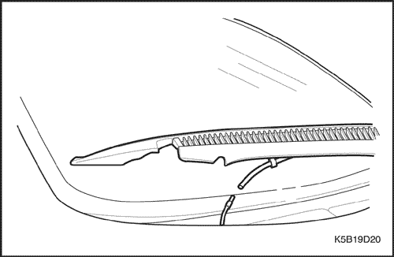
Manguito del lavaparabrisas
Procedimiento de desmontaje
- Abra el capó.
- Desmonte la rejilla de ventilación del capó. Consulte la Sección 9R, Parte delantera de la carrocería.
- Desenchufe el conector del manguito de lavaparabrisas.
- Levante y apoye el vehículo adecuadamente.
- Desmonte la rueda delantera. Consulte la Sección 2E, Neumáticos y ruedas.
- Quite los tornillos y desmonte la chapa guardabarros del paso de rueda delantera.
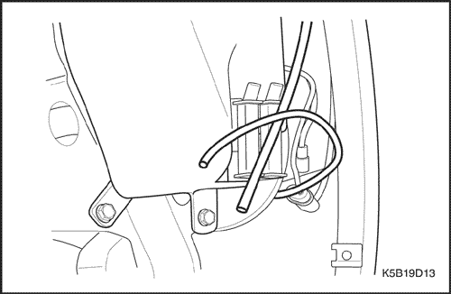
- Desconecte el manguito del lavaparabrisas de la bomba.
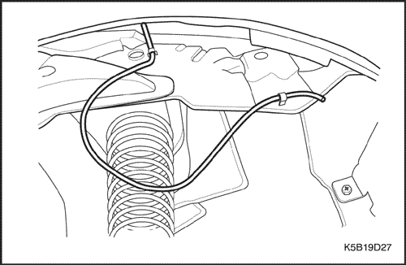
- Retire el manguito del lavaparabrisas.
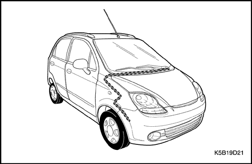
Procedimiento de montaje
- Conecte el manguito a la bomba del lavaparabrisas.
- Monte la chapa protectora del paso de rueda delantero con sus clips y tornillos.
- Monte la rueda delantera. Consulte la Sección 2E, Neumáticos y ruedas.
- Baje el vehículo.
- Enchufe el conector del manguito de lavaparabrisas.
- Monte la rejilla de ventilación del capó. Consulte la Sección 9R, Parte delantera de la carrocería.
DESCRIPCIÓN GENERAL Y FUNCIONAMIENTO DEL SISTEMA
Sistema limpiaparabrisas
El sistema limpiaparabrisas está formado por un motor, un varillaje, un brazo y una escobilla y un interruptor del limpia/lavaparabrisas. El circuito del limpiaparabrisas incorpora un dispositivo automático de estacionamiento, que está formado por un engranaje de tornillo sin fin y un plato de levas, con el fin de mantener el circuito engranado temporalmente una vez apagado el interruptor. El sistema del limpiaparabrisas está accionado por un motor de imanes permanentes. El motor del limpiaparabrisas va montado en el tablero y está conectado directamente al varillaje del limpiaparabrisas.
Este motor presenta dos velocidades, LOW y HIGH (Baja y Alta), así como la capacidad de intermitencia del limpiaparabrisas. El interruptor del limpiaparabrisas es parte integral del interruptor del sistema limpia/lavaparabrisas. El limpiaparabrisas se acciona a través de la palanca situada en el lado derecho de la columna de dirección.
Sistema lavaparabrisas
El sistema lavaparabrisas está equipado con un depósito de líquido de lavado, una bomba, manguitos, toberas y un interruptor del limpia/lavaparabrisas. El depósito va montado detrás de la chapa guardabarros del paso de rueda delantero izquierdo. Una bomba fijada al depósito bombea el líquido a través de los manguitos a las dos toberas montadas en el panel del capó. El interruptor del lavaparabrisas es parte integral del interruptor del sistema limpia/lavaparabrisas. El lavaparabrisas se acciona a través de la palanca situada en el lado derecho de la columna de dirección.
Sistema limpia/lavaparabrisas de la luneta trasera
El sistema limpia/lavaparabrisas de la luneta trasera viene equipado en los vehículos de la gama alta. El limpiaparabrisas y el lavaparabrisas de la luneta trasera forman un único conjunto. El lavaparabrisas va montado en el limpiaparabrisas.
El interruptor es el mismo que el del limpiaparabrisas delantero. Acciónelo una posición hacia delante y el limpiaparabrisas de la luneta trasera funcionará lentamente. Seleccione la siguiente posición y funcionará más deprisa.